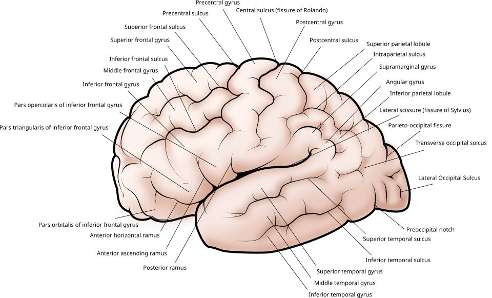

The layer that makes us human
The cerebral cortex is the layer of grey matter, 2 to 4 millimetres thick, that covers the hemispheres. It contains about 16 billion neurons organised in six layers and in vertical columns. It is the seat of the most complex functions: language, abstract thought, planning, conscious perception and voluntary movement.


It is heavily folded into ridges (gyri) and grooves (sulci). Spread out, it would cover about 2,000 cm², like a page and a half of a newspaper. The folds allow so much surface to fit inside the skull. Two thirds of the cortex is hidden at the bottom of the grooves.
The lobes
The main grooves divide each hemisphere into lobes:
| Lobe | Main functions | If it is damaged |
|---|---|---|
| Frontal | Voluntary movement (motor cortex), planning, decisions, impulse control, personality, spoken language (Broca's area) | Weakness, changes in personality and behaviour, apathy, expressive aphasia |
| Parietal | Sensation (somatosensory cortex), spatial integration, attention, calculation | Loss of sensation, neglect of the left side, difficulty dressing or finding one's way |
| Temporal | Hearing, understanding language (Wernicke's area), memory (hippocampus), recognising faces, emotions | Receptive aphasia, memory problems, temporal lobe epilepsy |
| Occipital | Vision | Loss of half the visual field, problems with visual recognition |
| Insula | Body sensations (interoception), taste, emotions, disgust | Autonomic and taste disturbances |
In addition, the limbic system (cingulate gyrus, hippocampus and amygdala) lies on the inner surface.
Primary and association areas
- Primary areas receive information from the senses or send out movement commands: the primary visual, auditory, motor and somatosensory cortex.
- Association areas, which make up most of the human cortex, integrate information and give it meaning. The prefrontal cortex is the part that has grown most in human evolution and the last to mature (around the age of 25).
The homunculus
In the 1930s and 1940s the neurosurgeon Wilder Penfield stimulated the cortex of awake patients during epilepsy operations and drew the homunculus: a map of the body on the motor and sensory cortex. The hands, face and lips take up far more space than the trunk or legs, because they need more precision.
Localisation of function
The idea that each function has its place was supported by Paul Broca in 1861, when he described a patient who could only say "tan" and had a lesion in the left frontal lobe. Carl Wernicke later described the area for comprehension. Today we know that complex functions depend on networks linking several areas rather than on a single spot. See language and the connectome.
Diseases of the cortex
- Stroke causes symptoms according to the area affected: the cerebral circulation determines which lobes are hit.
- Frontotemporal dementia affects the frontal and temporal lobes; Alzheimer's starts in the medial temporal lobe and spreads to the parietal cortex.
- Focal epilepsy causes symptoms depending on where the discharge starts, as Hughlings Jackson described.
Sources
- Penfield W, Boldrey E. Somatic motor and sensory representation in the cerebral cortex of man as studied by electrical stimulation. Brain. 1937;60:389-443.
- Glasser MF, et al. A multi-modal parcellation of human cerebral cortex. Nature. 2016;536:171-8.
- Broca P. Remarques sur le siège de la faculté du langage articulé. Bull Soc Anat Paris. 1861;6:330-57.
- Kandel ER, et al. Principles of Neural Science. 6th ed. McGraw-Hill; 2021.